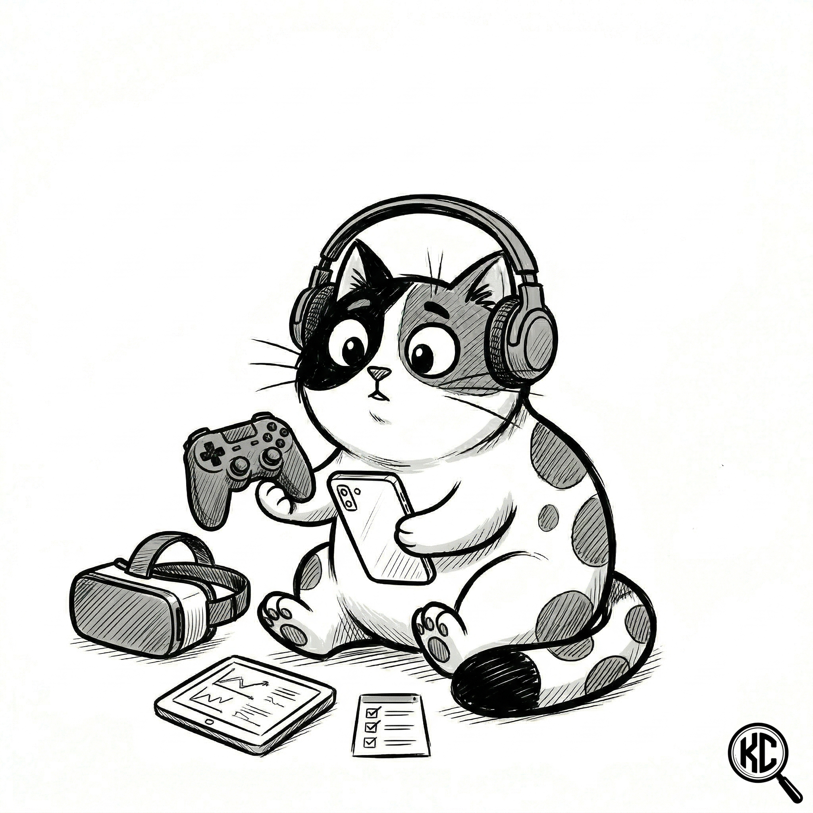

Demos, Alphas & Betas - Live Testing Work

If you have a demo, early build, live update, or small indie game that needs another set of eyes, this page shows the kind of testing I can provide.
I focus on problems that affect players directly: confusing onboarding, unclear controls, broken feedback, accessibility barriers, inconsistent systems, progression issues, and bugs that are hard to spot when you already know how your own game works.
The examples below are organised so developers can quickly find relevant work by platform, game type, or QA focus.
Browse QA Samples
Choose the category closest to your game. Each section contains short, practical testing examples with clear findings and evidence.